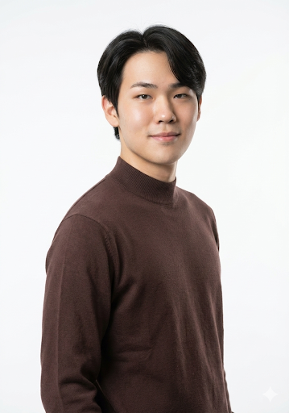
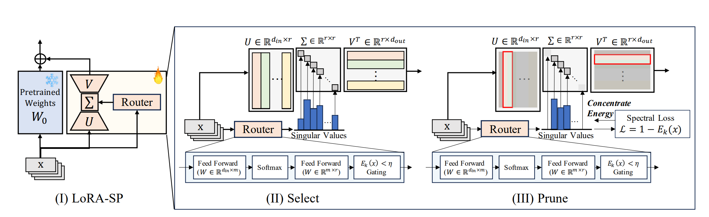

|
I am an undergraduate student at Seoul National University majoring in Electrical and Computer Engineering (ECE). My research interests lie at the intersection of Robot Learning and Physical AI, specifically focusing on how agents can learn complex manipulation tasks in unstructured environments. kgh011016@snu.ac.kr / CV / Google Scholar / Github / LinkedIn |
 |
Research FocusMy goal is to build robots that can perceive and interact with the physical world as robustly as humans do. I am currently exploring Vision-Language Models (VLMs) for robotic control and Reinforcement Learning under physical constraints. |
Publications |
|
|
HeLM: Hierarchical Explicit Language Memory for Non-Markovian Manipulation
Gyeonghun Kim, et al. CoRL 2026, Under Review GitHub Proposed hierarchical VLA framework with language memory; achieved 13% success rate improvement in real-world non-Markovian tasks. |
|
|
 |
Adaptive Capacity Allocation for Vision Language Action Fine-tuning
Donghoon Kim, Minji Bae, Unghui Nam, Gyeonghun Kim, Suyun Lee, Kyuhong Shim, Byonghyo Shim ICRA 2026, Accepted GitHub / arXiv Contributed to experiments, implementation, and data pipeline for VLA-based robotic control. Rank-adaptive LoRA achieving 23.3% improvement over baseline on π₀ model. |
Projects |
|
 |
HRL-LoRA: Hierarchical RL for Consistent Subtask Discovery in VLAs
Gyeonghun Kim Course Project, Stochastic Reinforcement Learning, SNU, 2025 Proposed a hierarchical framework that discovers robotic subtasks without manual supervision by attaching independent LoRA experts to a frozen VLA backbone (π₀) and training a PPO router to select experts. Introduced a consistency-aware reward to induce temporally coherent, interpretable subtask segmentation, and showed that entropy regularization is critical to avoid degenerate routing collapse. |